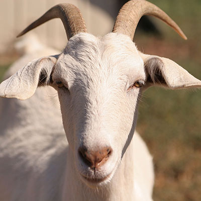

Den glada geten ligger beläget i det natursköna området Tjärnholmen i Norrbotten. Utöver smakfullt inredda rum finns även aktiveter att boka in under din vistelse. Gården är en gammal släktgård, som 2005 gjordes om till B&B och har sedan dess lockat besökare från hela Sverige och även världen.
På den glada geten har vi två ”husgetter”, Gösta och Selma, som håller till i en liten hage alldeles bredvid gårdshuset. Kring gården finns även trevliga vandringsslingor och vågar min sig på ett dopp i älven kan man boka bastu på den glada geten efter det svalkande doppet.
Du kan välja att delta i våra aktiviteter.
Samtliga rum på den glada geten har härliga sänglinnen i percale, som utlovar en härlig och sval natts sömn. Det finns även Wifi i alla rum (även om vi på glada geten förespråkar en nedkopplad tillvaro med nära naturupplevelser framför internet), minibar, vattenkokare, handdukar och badlakan och vår alldeles egna handgjorda tvål att använda i badkaret eller duschen! Familjerumen har även öppenspis.